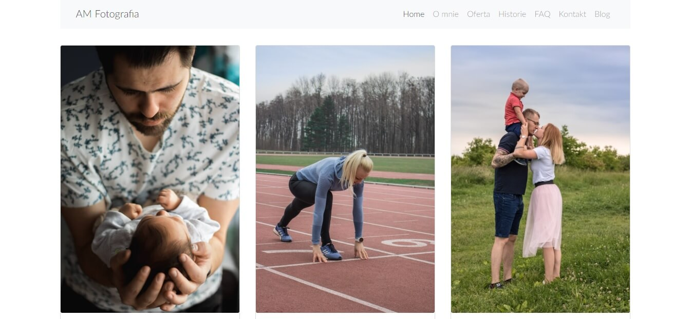
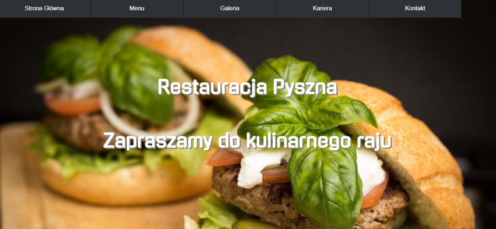
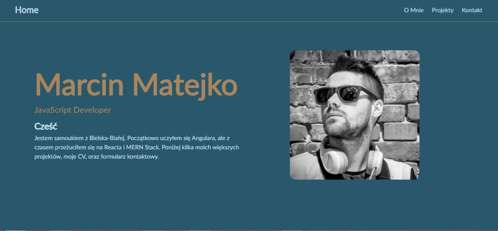

Projekty
Znajdują się tutaj tylko projekty wykonane całkowicie przeze mnie. Dlatego pominąłem wszelkiego rodzaju todolisty, kamień papier nożyce i podobne projekty wykonane na kursach. Więcej projektów możesz znaleźć na moim Github-ie.
Aleksandra Matejko Fotografia
Strona wizytówka fotografa rodzinnego. W tym projekcie odpowiadałem za wszystko, od projektu, po kupno domeny oraz wrzucenie projektu na hosting.
Technologie


Blog

Imitacja bloga. Strona z możliwością dodawania i usuwania postów. Backend w node.js, baza danych MongoDB. Prosta aplikacja MERN Stackowa.
Technologie


Restauracja Pyszna
Strona fikcyjnej restauracji. Napisana całkowicie w HTML i CSS. Do wyświetlania galerii użyłem light-boxa. Jest to pierwszy większy projekt, który zrealizowałem.
Technologie

Marcin Matejko
Strona na której właśnie jesteś. Zamysł był taki, żeby strona była prosta, przejrzysta i zbudowana bez użycia frameworka.
Technologie